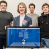

Incubator News – Converge Challenge 2016 Winners Announced
Converge Challenge raises the bar once again
£150,000 awarded to Scotland’s next generation of entrepreneurs
MindMate and MicroSense Technologies Ltd are announced as joint winners of Converge Challenge 2016
Second place is awarded to Chris Hughes of University of Strathclyde with Estendio
New for 2016, the Design and Creativity prize awarded to Dr Alexander Enoch of University of Edinburgh with
Robotical Ltd
Dr David Harris-Birtill of University of St Andrews announced as winner of the KickStart award category with
Beyond Medics Ltd – Automated Remote Pulse Oximetry (blood oxygen saturation)
Erika Grant of University of Aberdeen announced as winner of the Social Enterprise award category with
Project TurnKey
KickStart Digital Entrepreneur awarded to: Richard McAdam from Edinburgh Napier University with Regenerative
Shock Absorber
Anna Renouf of University of the Highlands & Islands was recognised with the Entrepreneurial Spirit Award
for her company – Orrin Equestrian Ltd
Winners represent a diverse geographical spread of the universities from across Scotland including:
University of Glasgow, Heriot-Watt University, University of Edinburgh, University of Strathclyde,
University of St Andrews, University of Aberdeen and, for the first time, both Edinburgh Napier University
and University of the Highlands & Islands